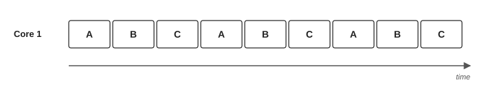

Concurrency and multithreading are fundamental concepts in software development that allow applications to manage multiple tasks efficiently, improve responsiveness, and utilize system resources effectively.
Concurrency is the ability of multiple threads to access and operate on shared resources (memory or files) at the same time. While multithreading enables the execution of multiple threads, concurrency addresses the challenges that arise when these threads interact with shared resources.
Without proper handling, concurrent access can lead to issues such as:
- Race ConditionsWhen the outcome of a program depends on the unpredictable timing of operations by multiple threads accessing shared data.
- DeadlocksWhen two or more threads are blocked indefinitely, waiting for each other to release resources.
- Data InconsistencyWhen shared data is modified by multiple threads in an uncoordinated manner, leading
to incorrect or unexpected values.
Concurrency is the ability of a system to make progress on multiple tasks during overlapping periods of time.
The tasks may execute by taking turns on a single CPU core or simultaneously on multiple CPU cores.
These tasks may not execute at exactly the same instant.
Instead, the CPU can switch between them, allowing each task to make progress.

Only one task executes at a given instant, but all three make progress.
For example, consider a Spring Boot application handling three requests:
- Request A: Fetch customer details.
- Request B: Process a payment.
- Request C: Generate an invoice.
Instead of completing A, then B, then C, the application can make progress on all three requests concurrently.
A web server can handle requests from multiple clients concurrently while some requests wait for database results.
Concurrency is a broad area containing several interrelated concepts: how work is executed, how correctness is preserved, how tasks coordinate, and how the system performs.

Execution models
| Concept | Meaning |
|---|---|
| Process | A program in execution, with its own virtual address space and OS-managed resources |
| Thread | An schedulable execution path within a process; threads can share process memory |
| Concurrency | Multiple tasks make progress during overlapping time periods |
| Parallelism | Multiple tasks execute at exactly the same time |
| Multithreading | Using multiple threads within a single process |
| Multiprocessing | Using multiple processes to perform work |
| Synchronization | Coordinating concurrent execution and access to shared resources |
| Context Switching | Suspending one execution context and resuming another |
| Scheduling | Deciding which task or thread gets CPU time |
| Thread pool | A reusable collection of worker threads |
| Virtual threads | Lightweight Java threads, useful for scaling blocking I/O workloads |
| Asynchronous execution | Starting an operation without having to wait synchronously for its completion |
Concurrency introduces correctness and progress problems when threads interact.
| Problem | Explanation | Example |
|---|---|---|
| Race Condition | Outcome depends on execution order | Two threads updating a balance |
| Data Race | Conflicting unsynchronized memory accesses | One thread reads while another writes |
| Deadlock | Threads wait indefinitely for each other | Opposite lock acquisition order |
| Livelock | Threads remain active but make no progress | Continually retrying and backing off together |
| Starvation | A thread is continually denied needed resources | Low-priority task rarely scheduled |
| Priority Inversion | Lower-priority thread delays higher-priority thread | Low-priority owner holds required lock |
| Visibility Problem | Other thread does not observe a write as required | Stop flag update not seen |
| Atomicity Violation | Multi-step operation is interrupted | Lost increment |
| Ordering Problem | Operations are observed in unexpected order | Publication without proper synchronization |
| Contention | Threads compete for the same resource | Many threads acquiring one mutex |
Parallelism means executing multiple tasks simultaneously, typically on different CPU cores.

Three tasks execute at the same time on three CPU cores.
Concurrency vs parallelism
| Concurrency | Parallelism |
|---|---|
| Multiple tasks make progress over overlapping time intervals | Multiple tasks execute at the same instant |
| Possible on a single CPU core | Requires multiple execution resources for CPU tasks |
| Focuses on managing and coordinating tasks | Focuses on simultaneous execution and throughput |
| Useful for responsiveness and overlapping waits | Useful for CPU-intensive workloads |
| Example: Web server managing requests | Example: Image processing on multiple cores |
Key point: Parallelism is one way to achieve concurrency, but concurrency does not require parallelism.
Important: An application can be concurrent without being parallel, parallel without using multiple application threads such as GPU computing, or both.
Multithreading is a programming technique where multiple threads execute within a single process.
A thread is an independent path of execution within a process.
Threads belonging to the same process generally share heap memory and process resources, while each thread
has its own execution stack and program counter. The exact order in which the threads execute is not guaranteed.
Multithreading refers to the ability of a program to execute multiple parts of its code (called threads) concurrently within a single process. Which allows a program to perform multiple tasks seemingly simultaneously, improving responsiveness and resource utilization.
- Better use of a single CPU
- Better use of multiple CPUs or cores
- Responsiveness - Long tasks run in the background, so the UI or the request listener never freezes.
- Fairness - Each client gets its own thread, so one slow request cannot hold up everyone else.

Concurrency is about structure: several tasks are in progress during the same period and their steps may interleave, even on a single CPU core. Parallelism is about execution: several tasks literally run at the same instant on different cores.
A program can be concurrent without being parallel (one core switching between threads) and parallel without much concurrency design (splitting one big computation across cores). Java’s concurrency tools make the first safe and the second practical.
Concurrency
Concurrency means multiple tasks are in progress during overlapping periods. They do not necessarily execute simultaneously.
For example, a single CPU core can execute three threads by rapidly switching between them.

Only one thread executes at any instant, but all three make progress through interleaving.
Parallelism
Parallelism means two or more tasks execute simultaneously, usually on different CPU cores.

All three threads execute at the same time on separate cores.
Differences
| Aspect | Concurrency | Parallelism |
|---|---|---|
| Goal | Manage multiple tasks in progress | Execute tasks simultaneously |
| CPU cores | One is sufficient | Multiple execution resources needed |
| Execution | Interleaved or simultaneous | Simultaneous |
| Main benefit | Responsiveness, efficient waiting | Throughput, faster computation |
| Main challenge | Coordination and correctness | Coordination, load distribution |
Important: Multithreading enables concurrency, but it does not guarantee parallelism.
Whether threads run in parallel depends on available CPU cores, scheduling and resource constraints.
These are different mechanisms for organizing concurrent execution.
| Aspect | Multithreading | Multiprocessing |
|---|---|---|
| Execution units | Threads | Processes |
| Memory | Shared process memory | Usually isolated address spaces |
| Communication | Shared objects, queues | IPC, sockets, shared memory |
| Scheduling | OS or runtime | OS |
| Parallel CPU execution | Possible | Possible |
| Major advantage | Efficient shared-state collaboration | Isolation and fault containment |
| Major challenge | Races and synchronization | IPC overhead and coordination |
Advantages
- ResponsivenessLong-running work runs on background threads, so the user interface or request handler is never frozen.
- Better CPU UtilizationWork spreads across all cores instead of leaving most of them idle.
- Higher ThroughputWhile one thread waits on I/O, others keep doing useful work.
- Natural ModellingIndependent activities, such as serving many clients, map directly to independent threads or tasks.
Disadvantages
- Hard to Reason AboutThe number of possible interleavings explodes, so correctness can no longer be checked by reading the code top to bottom.
- Non-Deterministic BugsRace conditions and deadlocks may appear only under load or on certain machines and are hard to reproduce and test.
- OverheadThread creation, context switching and lock contention cost time and memory; too many threads can make a program slower.
- Shared-State ComplexityEvery piece of shared mutable data needs a clear protection strategy, which adds design and review effort.
Understanding workload type is essential when choosing a threading model.
- CPU-bound
Tasks spend most of their time executing computations.
Examples: image processing, compression, numerical calculations.
Often benefits from parallel execution across CPU cores. - I/O-bound
Tasks spend substantial time waiting for external operations.
Examples: network requests, database queries, file I/O.
Often benefits from asynchronous I/O or lightweight concurrency.
For CPU-bound tasks, more runnable threads than available CPU execution capacity can increase contention and context switching without improving throughput.
For I/O-bound tasks, a higher number of concurrent operations can improve resource utilization because some tasks are waiting while others run.
Multithreading requires understanding how writes become visible to other threads.
Modern CPUs use registers, caches, and memory-ordering optimizations. Compilers and runtimes can also reorder operations within the guarantees of their language memory models.
Three important properties are:
- Atomicity: An operation cannot be observed partially.
- Visibility: Changes performed by one thread become observable by another under appropriate synchronization.
- Ordering: Operations are observed according to permitted memory-model rules.
The Java Memory Model (JMM) defines how threads interact through memory. It uses the happens-before relationship to specify when actions are ordered and writes must be visible.
Other important ideas include safe publication, synchronization actions, volatile, and the semantics of final fields.
Without appropriate synchronization, one thread is not necessarily guaranteed to observe another thread’s latest writes.
Deadlock occurs when threads cannot proceed because they are waiting for resources held by each other.

Four necessary conditions for classical resource deadlock (Coffman conditions):
- Mutual Exclusion: A resource cannot be used simultaneously by multiple owners.
- Hold and Wait: A task holds resources while waiting for others.
- No Preemption: Resources cannot be forcibly taken away.
- Circular Wait: A cycle of tasks waits on one another.
Common approaches to avoid or manage deadlocks include global lock ordering, timeouts, minimizing lock scope, deadlock detection, and avoiding nested locking where feasible.
Creating a new OS thread for every task can be expensive. Thread pools reuse worker threads.

Synchronization coordinates concurrent threads to preserve correctness.
| Mechanism | Purpose |
|---|---|
| Mutex / Lock | Allows exclusive access to a critical section |
| Semaphore | Controls access using a permit count |
| Monitor | Combines mutual exclusion with condition waiting |
| Condition Variable | Enables threads to wait for a state change |
| Read-Write Lock | Allows concurrent readers, exclusive writers |
| Spinlock | Repeatedly checks lock availability without sleeping |
| Atomic Operation | Performs certain operations indivisibly |
| Barrier | Waits until participating threads reach a common point |
| CountDown Latch | Waits for a specified number of completion signals |
| Thread-Safe Queue | Safely transfers data between producer and consumer threads |
| Concept | Meaning |
|---|---|
| Process | A program in execution, with its own virtual address space and OS-managed resources |
| Thread | An schedulable execution path within a process; threads can share process memory |
| Concurrency | Multiple tasks make progress during overlapping time periods |
| Parallelism | Multiple tasks execute at exactly the same time |
| Multithreading | Using multiple threads within a single process |
| Multiprocessing | Using multiple processes to perform work |
| Synchronization | Coordinating concurrent execution and access to shared resources |
| Context Switching | Suspending one execution context and resuming another |
| Scheduling | Deciding which task or thread gets CPU time |
| Thread pool | A reusable collection of worker threads |
| Virtual threads | Lightweight Java threads, useful for scaling blocking I/O workloads |
| Asynchronous execution | Starting an operation without having to wait synchronously for its completion |
The scheduler determines which runnable threads receive CPU time.
Context switching occurs when the system switches execution from one thread to another.
Context switching has overhead due to scheduling work and CPU state changes.
Related concepts include thread priorities, preemption, CPU time slices and thread starvation.
When multiple threads access the same mutable data, coordination may be necessary.
A race condition occurs when program behavior depends on the relative timing or ordering of concurrent operations.
A region of code that accesses shared mutable state and must be protected from unsafe concurrent access.
The synchronized keyword provides mutual exclusion and memory-visibility guarantees when threads use the same monitor correctly.
Synchronization coordinates concurrent access to shared resources. Common mechanisms with their Java forms:
| Mechanism | Purpose |
|---|---|
| Mutex / Lock | Protect access to a critical section |
synchronized | Java intrinsic monitor-based locking and memory synchronization |
ReentrantLock | Explicit, reentrant mutual exclusion with advanced capabilities |
ReadWriteLock | Separate read and write locking: concurrent readers, exclusive writer |
StampedLock | Supports read, write, and optimistic read modes |
Semaphore | Limits concurrent access to a resource through permits |
| Atomic variables | Lock-free atomic operations for individual values |
| Condition variables | Allow threads to wait for specific conditions |
CountDownLatch | Waits for a specified number of events |
CyclicBarrier | Synchronizes a fixed group of threads at a common execution point |
Phaser | Coordinates multiple synchronization phases |
| Blocking queue | Safely transfers data between producer and consumer threads |
Threads sometimes need to wait for data or coordinate actions.
Common mechanisms include wait, notify, notifyAll, Condition, BlockingQueue.
For example, a producer thread can put tasks into a BlockingQueue, while consumer threads take tasks from it.
| Problem | Explanation |
|---|---|
| Race condition | Execution timing changes the result |
| Data race | Conflicting unsynchronized memory accesses without a happens-before relationship |
| Deadlock | Threads remain blocked waiting for resources held by one another |
| Livelock | Threads remain active but cannot make useful progress |
| Starvation | A thread is repeatedly denied the resources or execution opportunities it needs |
| Priority inversion | High-priority work is delayed by lower-priority work |
| Contention | Multiple threads compete for a resource or lock |
| False sharing | Independent frequently updated variables occupy the same cache line, degrading performance |
| Problem | Cause | Preferred mitigation |
|---|---|---|
| Lost update | Nonatomic read-modify-write | Atomic variable or lock |
| Visibility bug | Missing happens-before relationship | Volatile, locks, or atomics |
| Deadlock | Circular lock dependencies | Consistent lock ordering, bounded acquisition |
| Starvation | Repeated scheduling or lock denial | Fairness where appropriate, bounded workloads |
| Livelock | Threads repeatedly react without progress | Backoff and bounded retries |
| Thread leak | Unbounded creation or missing shutdown | Structured executor lifecycle |
| Queue growth | Producers exceed consumption | Bounded queues, admission control |
| Lock contention | Excessive exclusive access | Reduce critical sections, partition state |
| Lost notification | Incorrect wait/notify protocol | Predicate loops, higher-level synchronizers |
| ABA problem | Value changes and returns before CAS | Versioned atomic references |
| ThreadLocal leak | Pooled worker retains request state | remove() in finally |
| Unsafe publication | Shared object exposed without proper synchronization | Final fields, safe publication |
| False sharing | Independent hot fields occupy the same cache line | Data-layout techniques, measurement |
| Pool starvation | Tasks block awaiting other tasks in the same constrained pool | Separate pools or redesign dependencies |
Creating a new platform thread for every task can be expensive. Thread pools allow worker threads to be reused.
The Executor framework includes ExecutorService, ThreadPoolExecutor, ScheduledExecutorService, and Future.
Java 21 introduced virtual threads as a permanent feature.
Virtual threads are lightweight Java threads managed by the JVM. They are especially valuable for applications handling large numbers of concurrent blocking I/O operations.
Virtual threads improve scalability for suitable workloads, but they do not automatically make CPU-intensive operations faster or eliminate race conditions.
Asynchronous programming allows a caller to initiate an operation without necessarily waiting for it to complete before doing other work.
CompletableFuture provides APIs for asynchronous computation and task composition.
Asynchronous programming and multithreading are related, but they are not identical.
- Shared-memory concurrency: Multiple threads operate on shared data, coordinated through locks or atomics.
- Message passing: Tasks communicate by sending messages rather than directly modifying shared state.
- Thread confinement: Mutable state is restricted to a single thread.
- Immutability: Data cannot be modified after creation, reducing synchronization requirements.
- Optimistic concurrency: Proceed assuming conflicts are infrequent; detect conflicts and retry or reject.
- Pessimistic concurrency: Acquire exclusive or controlled access before changing shared state.
- Structured concurrency: Organize related concurrent tasks into bounded lifetimes with coordinated completion and cancellation.
Once the fundamentals are understood, the following concepts become important in production applications.
| Concept | Purpose |
|---|---|
| Thread safety | Ensuring correctness under concurrent access |
| Immutability | Avoiding shared-state modification |
| Thread confinement | Keeping mutable data owned by one thread |
| ThreadLocal | Providing thread-associated data |
| Lock-free algorithms | Coordinating operations without conventional mutual exclusion |
| Compare-and-swap (CAS) | Atomic conditional updates |
| Concurrent collections | Thread-safe data structures such as ConcurrentHashMap |
| Fork/Join framework | Recursive parallel task execution and work stealing |
| Backpressure | Preventing producers from overwhelming consumers |
| Cancellation and interruption | Stopping or signaling ongoing tasks |
| Structured concurrency | Managing related concurrent tasks as a unit |
| False sharing | CPU cache contention involving separate variables |
| Amdahl’s Law | Understanding theoretical parallel speedup limits |
| Linearizability | A correctness model for concurrent operations |
These topics become especially important when designing high-performance concurrent systems.
| Area | Concepts |
|---|---|
| Scheduling | Preemption, time quantum, fairness, CPU affinity, work stealing |
| Thread coordination | Mutexes, semaphores, barriers, monitors, condition variables |
| Lock-free programming | Compare-and-Swap (CAS), lock-free queues, ABA problem |
| Memory architecture | CPU caches, cache coherence, memory barriers, false sharing |
| Concurrent data structures | Concurrent hash maps, blocking queues, ring buffers |
| Progress guarantees | Blocking, lock-free, wait-free algorithms |
| Thread management | Thread pools, virtual threads, thread-local storage |
| Communication patterns | Producer–consumer, pipeline, fork–join, actor model |
| Performance | Contention, context-switch overhead, Amdahl’s Law |
| Correctness | Safety, liveness, linearizability, happens-before |
Consider an order processing system:

Concurrency considerations include:
- Multiple users purchasing the final available unit of a product.
- Preventing double deduction of the same payment.
- Coordinating inventory updates across application instances.
- Handling simultaneous writes to the same database record.
- Managing thread-pool exhaustion and connection-pool contention.
For example, a Java synchronized block coordinates threads inside one JVM, but does not coordinate multiple Spring Boot instances. Distributed concurrency requires solutions such as database constraints, row locks, optimistic versioning or carefully designed distributed coordination.
Web request processing
Multiple requests can be processed concurrently using servlet container threads or other execution models.
Shared Spring singleton services must be designed with thread safety in mind.
Concurrent database updates
Transaction isolation, optimistic locking, pessimistic locking and database constraints help coordinate concurrent access to records.
Background processing
Spring Async, task executors, scheduled jobs and message consumers can execute independent workloads concurrently.
Parallel service calls
CompletableFuture can help issue independent API calls concurrently and combine their results, reducing total waiting time when execution resources permit.
| Concepts | Difference |
|---|---|
| Concurrency vs. parallelism | Overlapping progress vs. simultaneous execution |
| Synchronous vs. asynchronous | Waiting for completion vs. decoupled completion |
| Blocking vs. non-blocking | Waiting may suspend a thread vs. operations that do not require the caller to wait |
| Thread safety vs. reentrancy | Safe under concurrent access vs. safe to enter again before a prior invocation completes |
| Lock-free vs. wait-free | System-wide progress guarantee vs. per-operation progress guarantee |
| CPU-bound vs. I/O-bound | Computation-limited vs. waiting-on-I/O-limited |
| Local vs. distributed concurrency | Coordination within a process vs. across processes or machines |
To manage concurrency and prevent these issues, Java provides various synchronization mechanisms:
synchronizedkeyword: Used to create synchronized blocks or methods, ensuring that only one thread can execute a critical section of code at a time.Lockinterface: Offers more flexible and powerful locking mechanisms thansynchronizedblocks, including reentrant locks, read-write locks and condition variables.Semaphore: Controls access to a limited number of resources.Atomicclasses: Provide atomic operations on single variables, ensuring thread-safe updates without explicit locking.java.util.concurrentpackage: Offers a rich set of high-level concurrency utilities, includingExecutorServicefor managing thread pools,CountDownLatch,CyclicBarrierandBlockingQueuefor inter-thread communication and coordination.
public class Counter {
private int count;
public void increment() {
count++; read, add, write: three steps
}
public int get() {
return count;
}
}
void main(String[] args) throws Exception {
Counter counter = new Counter();
Runnable task = () -> {
for (int i = 0; i < 10_000; i++)
counter.increment();
};
Thread a = new Thread(task);
Thread b = new Thread(task);
a.start();
b.start();
a.join();
b.join();
System.out.println(counter.get()); often less than 20000
}count++ reads the value, adds one and writes it back.
If both threads read the same value before either writes, one increment is lost, so the final total changes from run to run.
This is a race condition: the result depends on how the two threads happen to interleave.
public class SynchronizedCounter {
private int count;
public synchronized void increment() {
count++; one thread at a time
}
public synchronized int get() {
return count;
}
}
public class AtomicCounter {
private AtomicInteger count = new AtomicInteger();
public void increment() {
count.incrementAndGet(); lock-free compare-and-set
}
public int get() {
return count.get();
}
}synchronized makes the read-add-write a single critical section and also guarantees that get() sees the latest value.
AtomicInteger does the same update without locking, using a hardware compare-and-set that retries if another thread changed the value first.
Either version always prints 20000.
void main(String[] args) {
AtomicInteger counter = new AtomicInteger();
try (ExecutorService pool = Executors.newFixedThreadPool(4)) {
for (int i = 0; i < 1_000; i++) {
pool.submit(counter::incrementAndGet);
}
} close() waits for every submitted task
System.out.println(counter.get()); always 1000
}Instead of creating a thread per task, four pooled threads take turns running the 1,000 submitted tasks.
Since Java 19, ExecutorService is AutoCloseable: leaving the try block shuts the pool down and waits for running tasks.
Swapping in Executors.newVirtualThreadPerTaskExecutor() runs each task on its own virtual thread.
- Minimize shared mutable state
Design classes to be immutable or minimize the amount of mutable data shared between threads. - Use appropriate synchronization
Choose the right synchronization mechanism based on the specific needs of the application. - Avoid deadlocks
Implement careful resource ordering and timeout mechanisms to prevent deadlocks. - Test thoroughly
Concurrent programs can be complex and require extensive testing to ensure correctness and performance.
Concurrency is about managing multiple tasks that are in progress.
Parallelism is about executing multiple tasks simultaneously.
Multithreading is one mechanism for implementing concurrency.
The OS schedules threads, switches execution contexts, and manages resources.
Applications use synchronization and memory-model guarantees to make shared-state interaction correct.
Concurrency is not just about executing more work at once. Concurrency is about ensuring that independently progressing tasks produce correct results, use resources efficiently and do not interfere with one another.
Concurrency is about coordinating multiple tasks that can progress during overlapping periods.
Multithreading is one mechanism for achieving concurrency, while parallelism is about executing work simultaneously. The most important challenge is not merely running multiple threads—it is ensuring correctness, thread safety, predictable progress and efficient resource usage under concurrent execution.